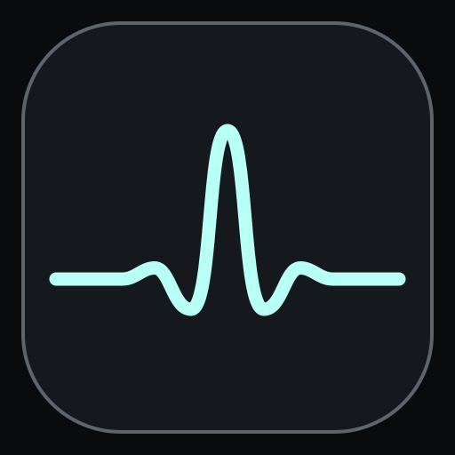
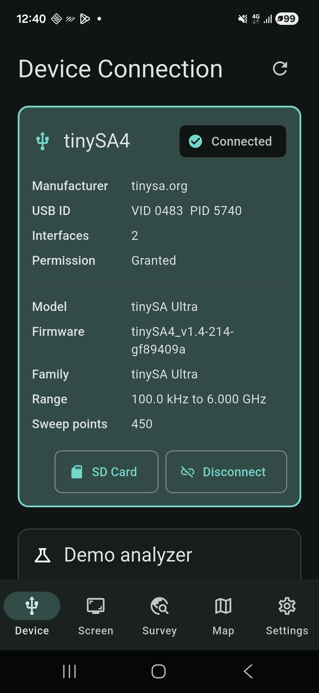
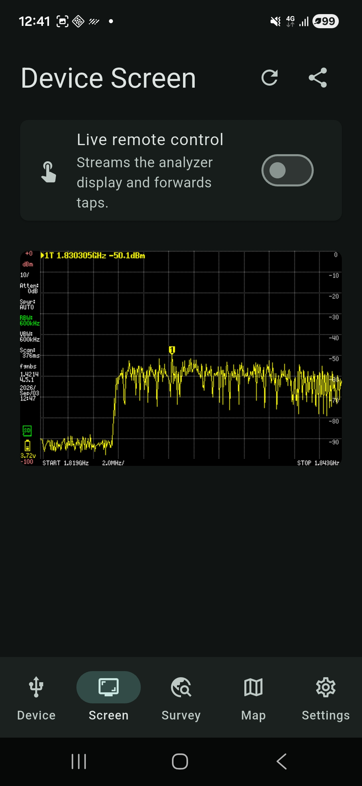
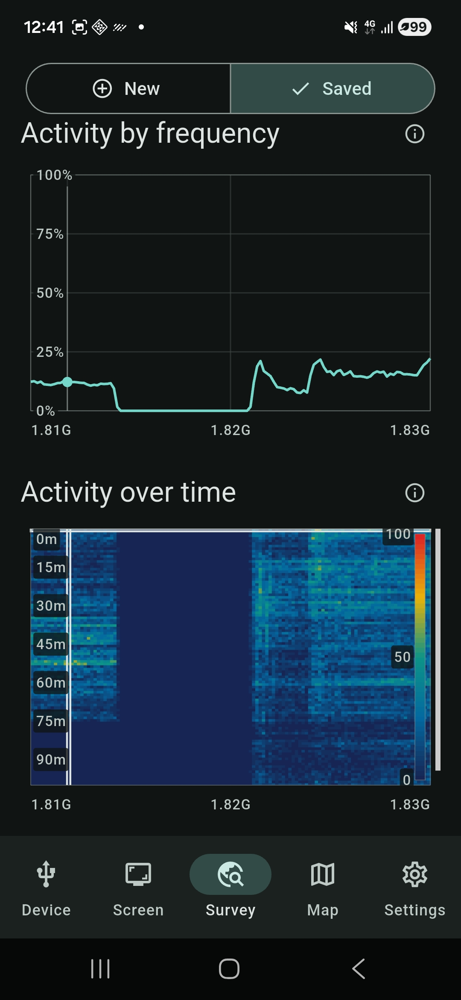
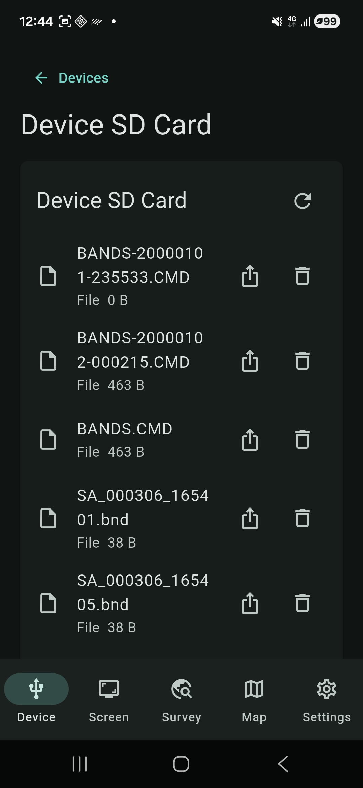

Connect and control
Detect compatible tinySA devices over USB, review model and firmware details, and view and operate the analyzer screen from your phone.

RF Survey CompanionConnect your tinySA over USB, control its screen, collect repeatable spectrum surveys, and see how signal activity changes across time and location.
Get it on Google Play
RF Survey Companion extends a tinySA with phone-sized controls, durable survey records, and location-aware views—without pretending a swept analyzer is a real-time I/Q receiver.
Detect compatible tinySA devices over USB, review model and firmware details, and view and operate the analyzer screen from your phone.
Collect repeated scalar spectrum sweeps and inspect activity by frequency or over time with clear plots and waterfall history.
Associate readings with phone GPS locations and review median signal level or above-threshold activity along a route.
Save surveys locally, revisit selected sweep points, access supported files on the analyzer SD card, and share or export when you choose.
Swipe through real app screens showing the device, survey, mapping, and file-management workflows.




Capt. Fluffyface Labs
Questions, feedback, or support requests are welcome.